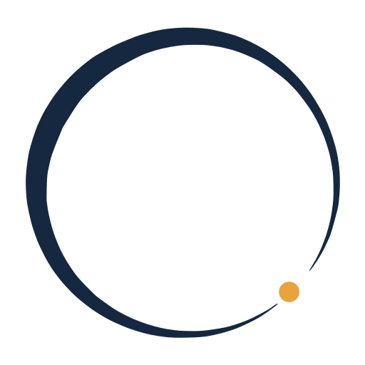

正在载入 KAIROS 全球 722 座目的地…
图形上下文正在恢复，地球将自动重绘…
跳过飞入
Esc
正在进入宇宙视界…
🔊 点击开启声音
Ⅱ
🔊
跳过
Esc

清单
0
0
地球
图鉴
规划
档案
搜索 722 城与 5,414 机位…
⌘K
电台
简
?
外观与主题色
黑夜
白天
主题色盘
自定义色值
#B47D22
深空背景
重播宇宙开场
影像来源
探索序章
新手导览
界面语言
美学主题
全部
自然奇观
城市建筑
气象与天象
全部
四季皆美
晴空星空
烟雨云海
雪景蓝冰
极限奇观
722 城 · 5,414 机位
全年
中国
全球
底图风格
卫星
国家地理
地形
暗夜
叠加图层
底图地名
全量标签
空间聚合
实时云图
地球时光机
旅行足迹
3D 地形与天文奇观
3D 地形
等高线
3D 建筑
暗夜灯光
实时极光
昼夜晨昏
季节热力
今日真地球
起伏倍率
1.0×
1.35×
1.8×
Satellite & Telemetry Inspector
Live / Historical
Source: ESRI / NASA GIBS / NOAA OVATION / MapLibre DEM · Click any science layer to inspect cadence, resolution & legend.
■ Radar/Cloud: RainViewer / GIBS
■ Aurora: NOAA Kp 0–9
■ Heat: Phenology 0–100
Opacity
80%
全景
返回地球
KAIROS ·
全球旅行地理图鉴
?
WORLD ATLAS · 722 DESTINATIONS
全球旅行地理图鉴
按自然奇观、建筑美学、四季全天候与极限气象索引全球 722 座目的地，点选即飞往 3D 实景坐标。
返回地球
全部
自然奇观
城市建筑
四季皆美
极限天象
收藏
追美榜
0
ESC
退出全屏
F
地球
图鉴
规划
档案
图层